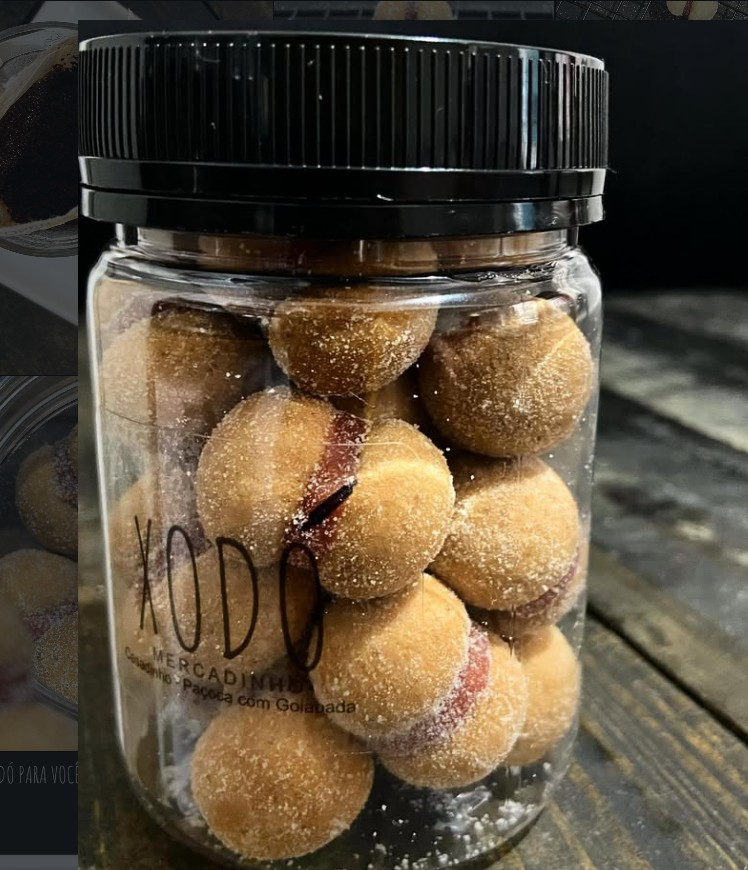
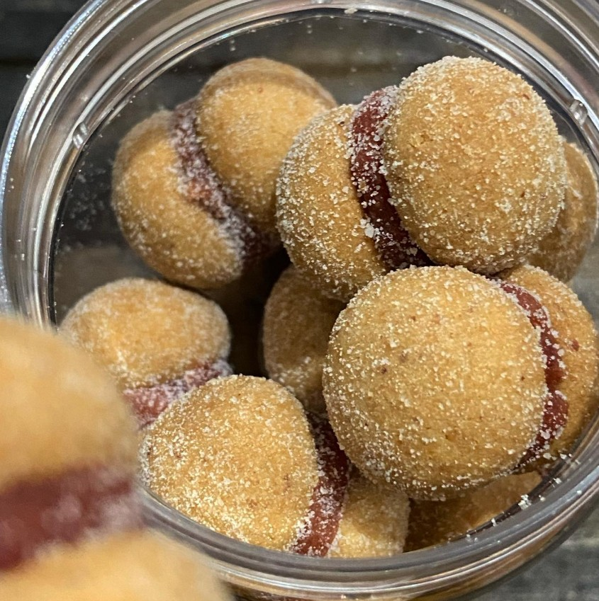
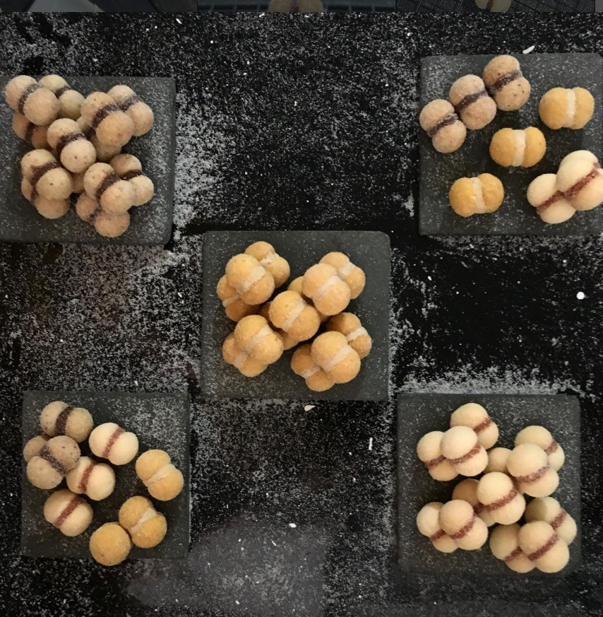
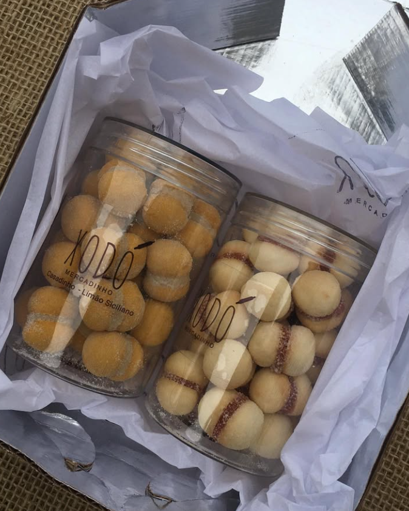
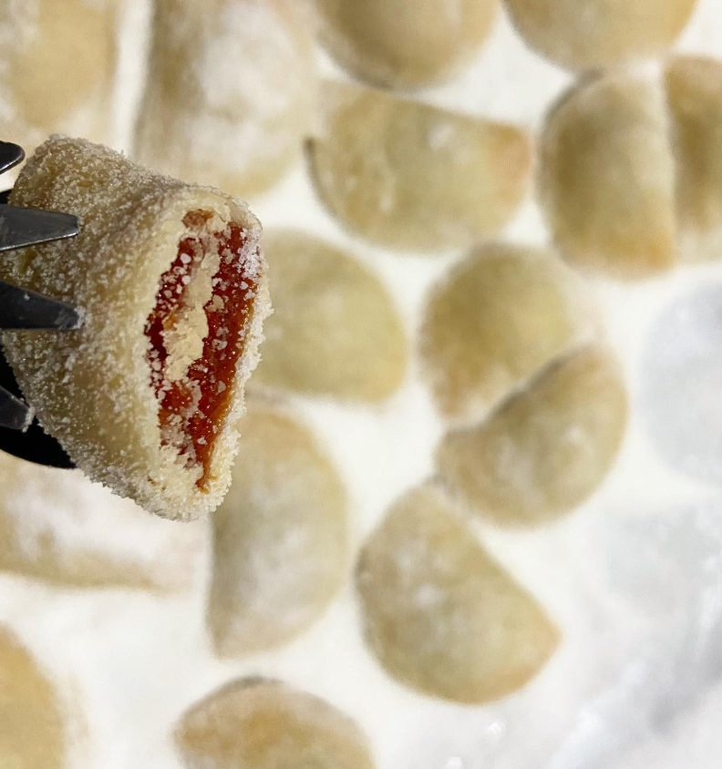
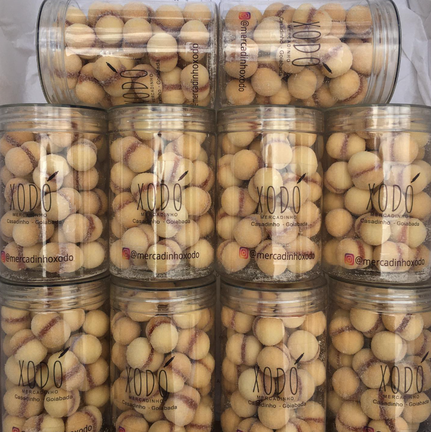

Doces Baiano em São Paulo
Docinhos artesanais feitos com carinho e tradição baiana. Perfeitos para presentear ou mimar você mesmo.

Feitos artesanalmente com ingredientes selecionados

Paçoca com goiabada, coberto de açúcar — o docinho mais amado da casa.

Diversas combinações de recheios e coberturas para todos os gostos.
Embalados no potinho personalizado Xodó — ótimos para presentes e lembranças.

Monte seu kit para datas especiais, casamentos e festas com o toque Xodó.
Nossa história
O Mercadinho Xodó nasceu do amor pelos doces tradicionais da Bahia. Nossa missão é trazer o sabor autêntico da doceria baiana para as mesas paulistanas, com receitas passadas de geração em geração.
Atendemos na loja, fazemos entregas e aceitamos encomendas para eventos. Venha nos visitar!
Como chegarCada pote feito com amor e tradição


Encomendas, dúvidas ou só para dar oi 😊
R. Piqueri, 42 - Freguesia do Ó
São Paulo - SP, 02925-070
Abre às 09:00
Consulte o horário de fechamento
Siga a gente
@mercadinhoxodo